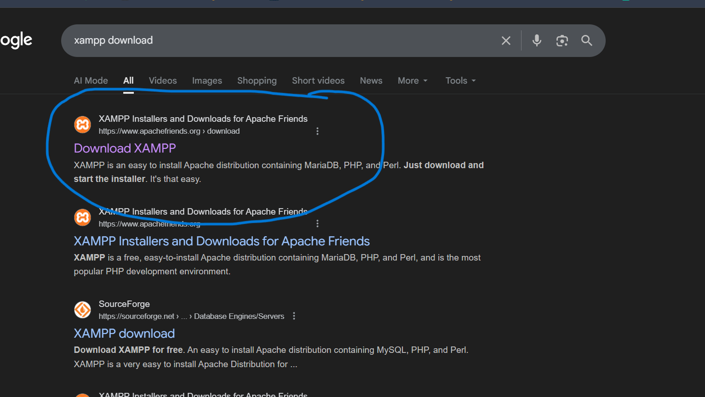
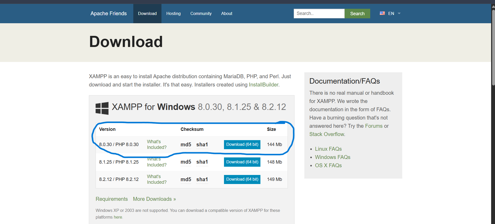
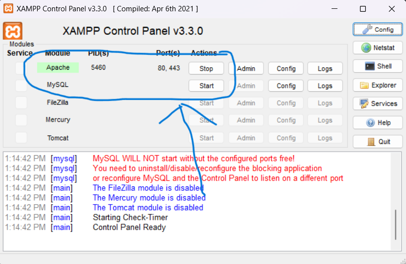
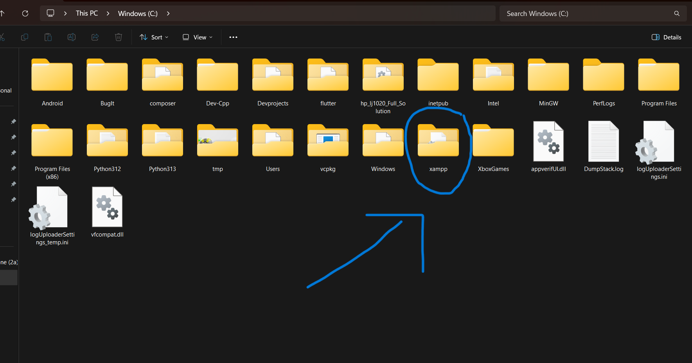
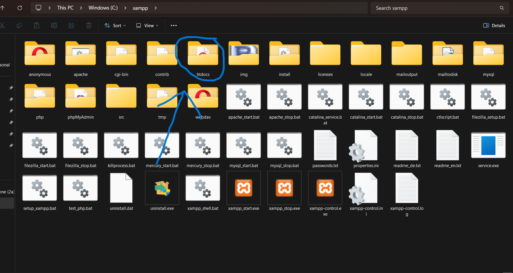
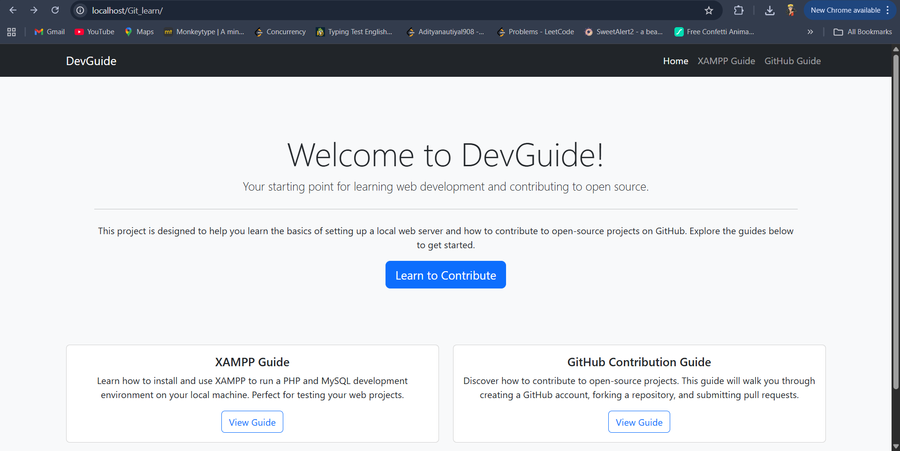

Setting Up Your Local Server with XAMPP
Step 1: Download XAMPP
The first step is to download the XAMPP installer from the official Apache Friends website.  Choose the version that corresponds to your operating system (Windows, macOS, or Linux). 
Download XAMPPStep 2: Install XAMPP
Run the installer you just downloaded. The setup process is straightforward. You can follow the on-screen instructions. It is recommended to install it in the default location.

Step 3: Start the XAMPP Control Panel
Once installed, open the XAMPP Control Panel. Here, you can start and stop the different modules. For a basic website, you will need to start the Apache module. If you need a database, you can also start the MySQL module.
To verify that XAMPP is running correctly, open your web browser and navigate to http://localhost/dashboard. You should see the XAMPP dashboard page.
Step 4: Place Your Project in the 'htdocs' Folder
Your local websites need to be placed in a specific folder. Navigate to the XAMPP installation directory and find the `htdocs` folder. This is where you will place your project files.
Step 5: View Your Website
With Apache running and your files in `htdocs`, you can now view your website in your browser. Open your browser and navigate to `http://localhost/your_project_folder_name`. You should see your website live!
